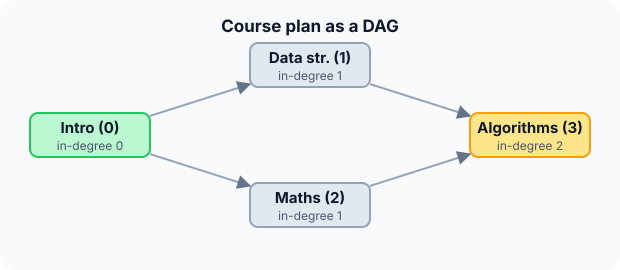

Prerequisites
- Directed graphs (see representations).
- Queue.
- DFS, for the alternative method.
The analogy
Everyday analogy
Think of getting dressed: socks before shoes, trousers before shoes, shirt before tie. Any order works as long as each item comes after the things it depends on.
Topological sort finds such an order. It starts with things that depend on nothing (socks, shirt, trousers) and unlocks each item once everything before it is done.
How it works
Precondition: a directed acyclic graph (DAG). If there is a cycle, no valid order exists, and the algorithm reports it.
Start with the course plan by hand
Edges (prerequisite → course): 0 → 1, 0 → 2, 1 → 3, 2 → 3. In-degree = number of unfinished prerequisites. Kahn's method: queue every vertex with in-degree 0, then repeatedly take one, output it, and lower its successors' in-degrees. Predict, then open "Check".
Example: predict before you read
Step 1. Compute the in-degrees and the starting queue.
Check
In-degrees 0, 1, 1, 2. Only vertex 0 has in-degree 0: queue [0].
Step 2. Cover the next line and guess: output 0. Which vertices enter the queue?
Check
1 and 2: their in-degrees drop from 1 to 0. Queue [1, 2].
Step 3. Output 1, then 2. Predict when 3 enters the queue and the final order.
Check
After 1, in-degree of 3 is 1; after 2, it is 0, so 3 enters. Order: 0, 1, 2, 3.

Quick recall: Before reading further, cover the text above and say out loud: which vertices can go first in a topological order?
Check your answer
Those with in-degree 0: nothing has to come before them.
Finish the picture: more orders, and a cycle
Topological orders are not always unique, and sometimes none exists.
- Another order. Predict a second valid order for the course plan.
Check
0, 2, 1, 3: Maths before Data structures works too, since neither depends on the other.
- Add the edge 3 → 0. Predict what Kahn's method does.
Check
Every vertex now has in-degree ≥ 1, so the queue starts empty and nothing is output: 0 < 4 vertices, so there is a cycle.
Quick recall: Without scrolling up, say out loud: how does Kahn's method notice a cycle?
Check your answer
It outputs fewer than $V$ vertices: the vertices on the cycle never reach in-degree 0.
The rule in plain words
Compute every vertex's in-degree. Put all in-degree-0 vertices in a queue.
Repeat: dequeue a vertex, append it to the order, and decrement its successors' in-degrees, enqueueing any that reach 0. If the order has fewer than $V$ vertices, the graph has a cycle.
Quick recall: Before you read the code, write Kahn's method in your own words. Then check below.
Check your answer
1. Count incoming edges for every vertex. 2. Queue all vertices with none. 3. Repeatedly take one, output it, and decrease the count of each vertex it points to, queueing any that reach zero.
The code
Read this code after you have sorted the course plan by hand. It will make more sense.
int topo_sort(int adj[][4], int n, int order[]) { /* returns how many were ordered */
int indeg[100];
int queue[100];
int head = 0, tail = 0;
for (int v = 0; v < n; v++) { indeg[v] = 0; for (int u = 0; u < n; u++) indeg[v] += adj[u][v]; }
for (int v = 0; v < n; v++) if (indeg[v] == 0) queue[tail++] = v; /* no prerequisites */
while (head < tail) {
int u = queue[head++];
order[head - 1] = u;
for (int v = 0; v < n; v++)
if (adj[u][v] && --indeg[v] == 0) queue[tail++] = v; /* last prerequisite done */
}
return head; /* < n means there is a cycle */
}Definition
What you just did, in one line: a topological sort of a directed acyclic graph is an ordering of its vertices such that every edge $u \to v$ has $u$ before $v$. Kahn's algorithm builds one by repeatedly removing vertices with no incoming edges.
graph LR
I["Intro (0)"] --> D["Data structures (1)"]
I --> M["Maths (2)"]
D --> A["Algorithms (3)"]
M --> A
How fast is it?
Quick recall: Before looking at the formula, predict: how many times is each edge looked at?
Check your answer
Once when computing in-degrees and once when its source is output: $O(V + E)$ in total with lists.
Each vertex enters and leaves the queue once, and each edge decrements one in-degree once:
$$O(V + E) \text{ with adjacency lists}, \qquad O(V^2) \text{ with a matrix}$$The DFS method has the same cost: run DFS and output vertices in reverse finish order.
| Measure | Cost | Why |
|---|---|---|
| Time (lists) | $O(V + E)$ | Each vertex and edge handled once |
| Time (matrix, code above) | $O(V^2)$ | Row and column scans |
| Cycle detection | Free | Fewer than $V$ vertices output |
| Extra space | $O(V)$ | In-degrees and the queue |
Warning
A topological order exists only for directed acyclic graphs. Always check the output length; printing a partial order without saying there is a cycle hides a real error, like a circular dependency in a build.
Exam tip
Be able to do it both ways: Kahn (in-degrees and a queue) and DFS (reverse post-order). And remember: many valid orders can exist.
Common mistakes
- Forgetting to check for cycles, so a partial order is returned silently.
- Using DFS visit (pre-order) order instead of reverse finish order.
- Claiming the topological order is unique.
Try it yourself
Exercise 1 (warm-up)
Getting dressed: socks → shoes, trousers → shoes, trousers → belt, shirt → belt. Give one valid order.
Hint
Start with items that depend on nothing.
Answer
For example: socks, trousers, shirt, shoes, belt. (Several others are valid.)
Exercise 2 (a bit harder)
With edges 0 → 1, 0 → 2, 1 → 3, 2 → 3, how many different topological orders exist? List them. Write your answer down before you open it.
Show answer
Two: 0, 1, 2, 3 and 0, 2, 1, 3. 0 must be first and 3 last, while 1 and 2 can swap.
Did you know?
Did you know?
Arthur Kahn published the in-degree method in 1962 for scheduling large projects, the same problem as planning a construction schedule.
When make, npm or a spreadsheet works out what to rebuild or recalculate first, it is running a topological sort of the dependency graph.
Key points to remember
If you remember one thing from each line, remember the because.
- In-degree-0 vertices go first because nothing has to come before them.
- Outputting a vertex can unlock others because it removes one prerequisite from each successor.
- It costs $O(V + E)$ because each vertex and edge is handled once.
- Fewer than $V$ outputs means a cycle because vertices on a cycle always keep an unfinished prerequisite.
- Several orders can be valid because independent tasks can go in any relative order.
Self-check questions
Answer these in order, out loud. They follow the page, so your answers become the script of your video.
- How is topological sort like getting dressed?
Sample answer
Some items must come before others (socks before shoes), but independent items can go in any order; you find an order that respects every "before".
- Walk through Kahn's method on 0 → 1, 0 → 2, 1 → 3, 2 → 3.
Sample answer
In-degrees 0, 1, 1, 2; queue [0]. Output 0, queue 1 and 2; output 1 (3 drops to 1); output 2 (3 drops to 0, enqueue); output 3. Order 0, 1, 2, 3.
- Why does the code use
--indeg[v] == 0inside the loop?A good answer says when a vertex becomes free.
Sample answer
Outputting u removes one prerequisite of v. When the count reaches exactly 0, v's last prerequisite is done, so it is enqueued then, and only once.
- So what is a topological sort, in one sentence?
Sample answer
An ordering of the vertices of a DAG such that every edge points from an earlier vertex to a later one.
- Why does a cycle make topological sorting impossible?
A good answer looks at the first vertex of the cycle in any order.
Sample answer
In any order, some vertex of the cycle comes first, but the cycle has an edge into it from a later vertex, breaking the rule. Kahn's method shows this as vertices that never reach in-degree 0.
- What does topological sort cost?
Sample answer
$O(V + E)$ with adjacency lists, $O(V)$ extra space.
- How would you do it with DFS instead?
Sample answer
Run DFS from every unvisited vertex and record vertices when they finish; the reverse of that finish order is a topological order.
- If you had to teach this to a friend in 2 minutes, what would you leave out, and why?
Sample answer
I'd leave out the DFS method and the matrix code. I'd keep the getting-dressed analogy, the course plan with in-degrees, and "start with no prerequisites, unlock as you go, no cycles allowed".
External resources
- VisuAlgo: Graph traversal: includes topological sort with both methods.
- GeeksforGeeks: Kahn's algorithm: code and cycle detection.
- Wikipedia: Topological sorting: both algorithms and applications.
Videos
- YouTube search: Kahn's topological sort: pick a walkthrough with in-degrees.